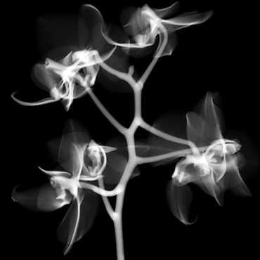
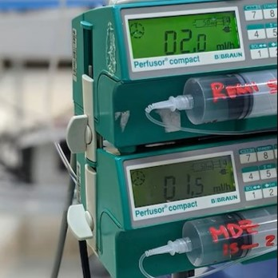
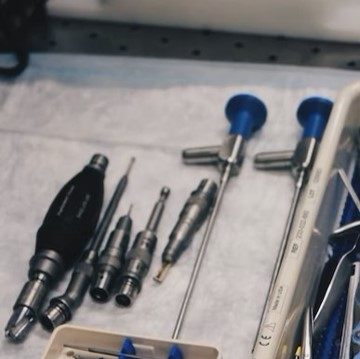
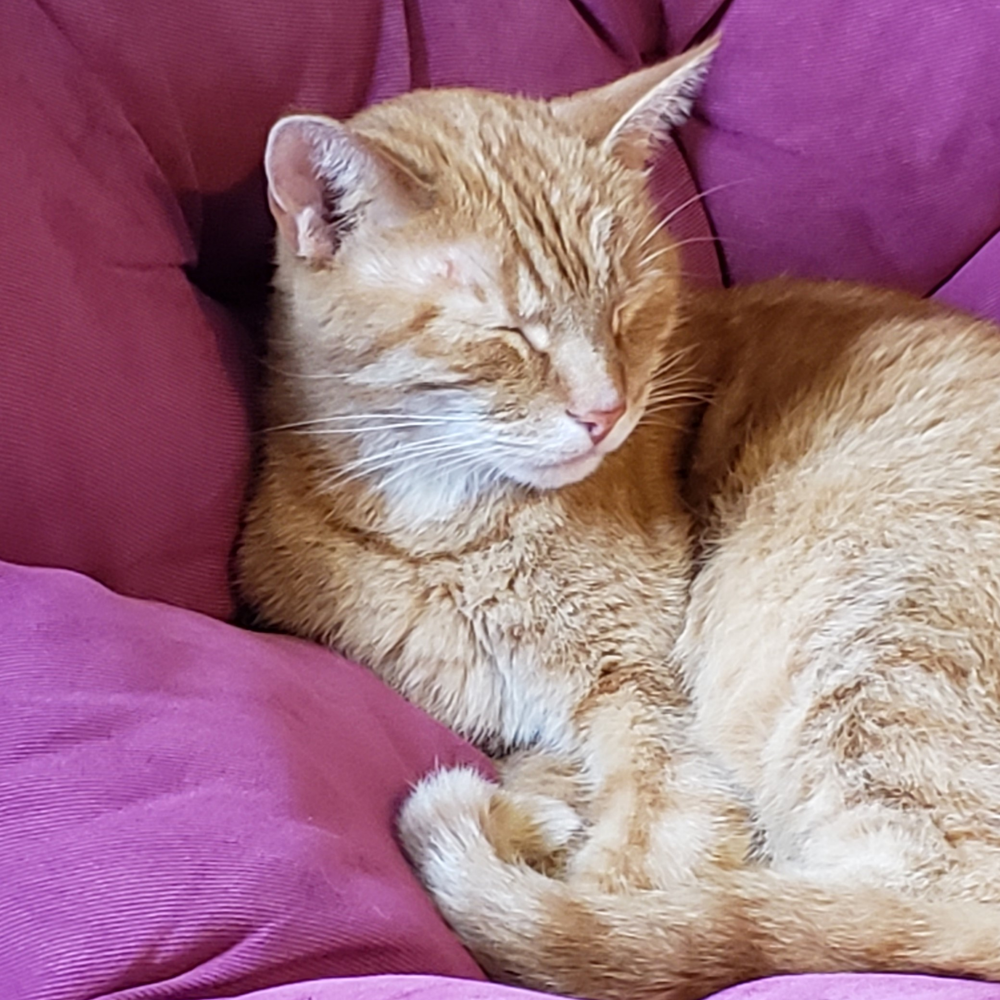

PhD, MS, and BS in Biomedical Engineering from The Ohio State University with focus on biomaterials, biomechanics, and tissue engineering.
Data Science
Experienced Python practitioner and early technology adopter with expertise in computer vision, image analysis, and biostatistics.
Medical Research
High-impact project leader with established record of scientific contribution as demonstrated by 15+ peer-reviewed publications, 30+ conference presentations, and patent filing
Magna cum laude with Honors in Engineering and Honors Research Distinction
The Ohio State University, Columbus, OH
2018
Master of Science in Biomedical Engineering
The Ohio State University, Columbus, OH
2020
Doctor of Philosophy in Biomedical Engineering
The Ohio State University, Columbus, OH

2020-2021
Medical Imaging Scientist (Post-Doctoral Researcher)
Center for Regenerative Medicine, Nationwide Children's Hospital, Columbus, OH

2021-2022
Clinical Research Leader and Assistant Professor of Practice
Department of Anesthesiology, Nationwide Children's Hospital, Columbus, OH

2022-2023
Senior Design Engineer
Front End Innovation - Advanced Modeling, Ethicon Inc., Cincinnati, OH
2023
Senior Data Manager
Clinical Affairs - Data Management, Ethicon Inc., Cincinnati, OH
Be Part
Of My
Story!
My Amazing Team
Here are my roommates.
Katie Legg
Spouse

Frank
Orange Cat
Daphne
Pembroke Welsh Corgi
My wife Katie and I currently live in Columbus, Ohio with our Pembroke Welsh corgi named Daphne and orange cat named Frank. Outside of work, I enjoy practicing tai chi and karate, hiking with my wife and dog, and reading books with my cat.
Vitreous Rheology
The vitreous humor is a clear gel inside the eye that undergoes a paradoxical change as we age: it simultaneously stiffens and liquefies.
Rheological Properties and Age-Related Changes of the Human Vitreous Humor - Tram and Swindle-Reilly 2018
A new biomaterial (patent-pending) that can replace both the physical roles but also the chemical functions of the vitreous humor. Poly(ethylene glycol)-based hydrogels were proposed as vitreous substitutes. The hydrogels have similar physical and optical properties as the natural vitreous humor. With the addition of vitamin C, the hydrogels protect the lens cells from reactive oxygen species. This is the first report on a vitreous substitute that can replace both the physical and chemical roles of the natural vitreous.
A Hydrogel Vitreous Substitute that Releases Antioxidant - Tram et al. 2020
A combination of two powerful antioxidants, vitamin C and glutathione, might prevent cataract formation after the removal of the vitreous humor.
Glutathione improves the antioxidant activity of vitamin C in human lens and retinal epithelial cells: implications for vitreous substitutes - Tram, McLean, and Swindle-Reilly 2021
A summary of more than 100 studies that span over 50 years on the mechanical properties of vitreous humor and vitreous substitutes.
Macro-and microscale properties of the vitreous humor to inform substitute design and intravitreal biotransport - Tram, Maxwell, and Swindle-Reilly 2021
The shape of the cornea (the front part of the eye where you put your contact lenses on) changes with the surrounding eye tissues. This helps explain how the cornea gets its shape during embryonic development. The cornea, or the transparent layer forming the front of the eye, has a particular curvature that allows the eye to focus. This curvature is significantly different from the white of the eye, though the mechanism by which the eye generates this difference remains elusive. Computational and experimental studies compared the corneal curvature in the presence and absence of adjacent tissues within the eye, indicating that the absence of these tissues results in a cornea which is too flat for good vision. A better understanding of this interplay may allow prevention or treatment of refractive errors such as myopia (near-sightedness) and hyperopia (far-sightedness), as well as diseases related to the cornea and the lens.
Accommodative tissues influence the shape of the cornea and potentially drive corneal morphogenesis - Tram et al. 2020
In one aspect, the disclosure relates pertains to a vitreous substitute comprising a gel and an antioxidant, wherein the vitreous substitute mimics the physical properties of natural vitreous humor, as well as its methods of use in the treatment of ophthalmological disorders.
Antioxidant-releasing vitreous substitutes and uses thereof - Swindle-Reilly, Reilly, and Tram 2022
Standard of care CT imaging can quantify treatment-induced changes in body composition that are not reflected by traditional BMI assessment.
Quantification of chemotherapy-induced changes in body composition in pediatric, adolescent, and young adult lymphoma using standard of care CT imaging - Tram et al 2022
AI-powered body composition analysis reduces processing time from 45 minutes to under 1 second with accuracy of over 95%.
Deep learning of image-derived measures of body composition in pediatric, adolescent, and young adult lymphoma: association with late treatment effects - Tram et al 2023
The prevalence of children with severe obesity undergoing ambulatory surgical procedures increased by more than 25% from 2012 to 2019. Children with class 3 obesity have 20% higher odds of same-day admission following outpatient surgery compared to healthy weight children.
Childhood obesity trends: Association with same-day hospital admission in a National Outpatient Surgical Population - Tram et al 2023